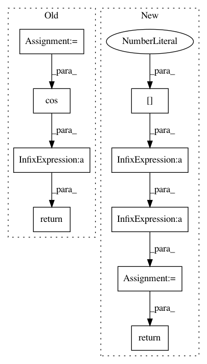

fb02935ed9bf290339ba2a59183691c691f913bd,benchmarks/benchmarks/go_benchmark_functions/go_funcs_E.py,Easom,fun,#Easom#Any#,40
Before Change
a = 20.0
b = 0.2
c = 2 * pi
return (-a * exp(-b * sqrt(sum(x ** 2) / self.N))
- exp(sum(cos(c * x)) / self.N) + a + exp(1))
class Eckerle4(Benchmark):
r
After Change
def fun(self, x, *args):
self.nfev += 1
a = (x[0] - pi)**2 + (x[1] - pi)**2
return -cos(x[0]) * cos(x[1]) * exp(-a)
class Eckerle4(Benchmark):
r
In pattern: SUPERPATTERN
Frequency: 3
Non-data size: 9
Instances
Project Name: scipy/scipy
Commit Name: fb02935ed9bf290339ba2a59183691c691f913bd
Time: 2015-11-09
Author: andyfaff@gmail.com
File Name: benchmarks/benchmarks/go_benchmark_functions/go_funcs_E.py
Class Name: Easom
Method Name: fun
Project Name: scikit-image/scikit-image
Commit Name: f966ef79ae7c47b93029e065b3ee6686bab5bff7
Time: 2017-03-29
Author: jirka.borovec@seznam.cz
File Name: skimage/measure/fit.py
Class Name: LineModel
Method Name: predict_x
Project Name: scikit-image/scikit-image
Commit Name: f966ef79ae7c47b93029e065b3ee6686bab5bff7
Time: 2017-03-29
Author: jirka.borovec@seznam.cz
File Name: skimage/measure/fit.py
Class Name: LineModel
Method Name: predict_y